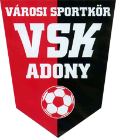

Adonyi Sporthírek

VSK SPORTKÖR :
Pálinkás András sportköri elnök:
Elérhetőség: 06 20/926-9922
e-mail: vskadony2457@gmail.com
Old Boys öregfiúk labdarúgó csapat:
elnök: Balassa Attila
elérhetőség: 06 20/316-1899
Gyermek labdarúgó csapat:
elnök: Boldoczki Sándor
elérhetőség: 06 30/931-8231